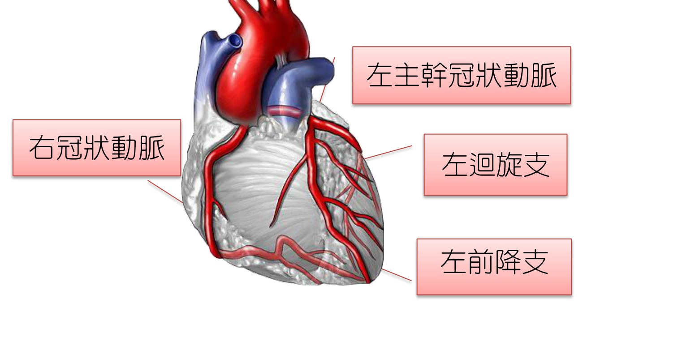
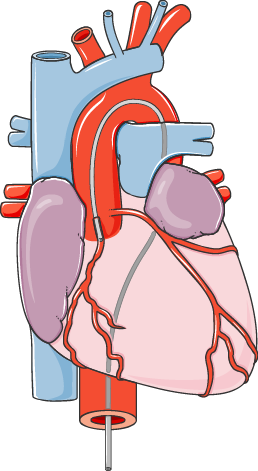
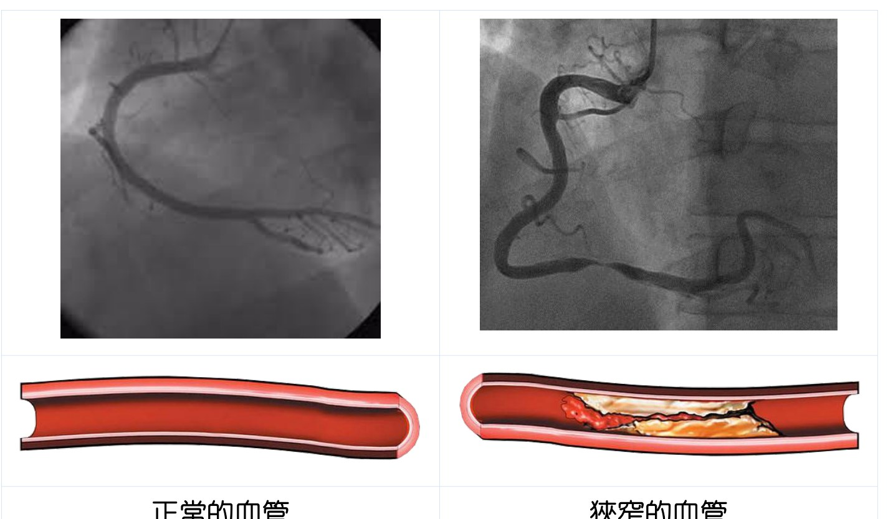

認識冠狀動脈與診斷
心臟就像一座永不停歇的幫浦，將血液送往全身。而心臟肌肉本身的氧氣與養分，則是靠心臟表面三條主要的冠狀動脈來供應。當這些血管變窄或阻塞，心肌就會「缺血」，出現胸悶、胸痛或喘等症狀。三條冠狀動脈左主幹冠狀動脈會再分出「左前降支（LAD）」與「左迴旋支（LCx）」，加上「右冠狀動脈（RCA）」，是供應心臟的三大主要血管。

如何知道我的心臟血管有問題？
當醫師懷疑冠狀動脈疾病時，可能會安排心電圖、運動心電圖、心臟超音波、核子醫學心肌灌注掃描等非侵入性檢查來評估。其中，心導管冠狀動脈攝影是目前診斷冠狀動脈狹窄最直接、最準確的檢查，能清楚看到狹窄的位置與嚴重程度。

「狹窄超過 70%」代表什麼？
冠狀動脈攝影檢查後，可以直接判斷狹窄的部位與嚴重程度。若心臟的血管狹窄超過 70%，心臟肌肉得到的血流明顯減少，氧氣供需失衡，可能造成胸悶、胸痛或活動時不適。臨床小提醒狹窄程度、位置、血管條數與心臟功能，都會影響治療方式的選擇——這也是為什麼需要和醫療團隊一起討論。
